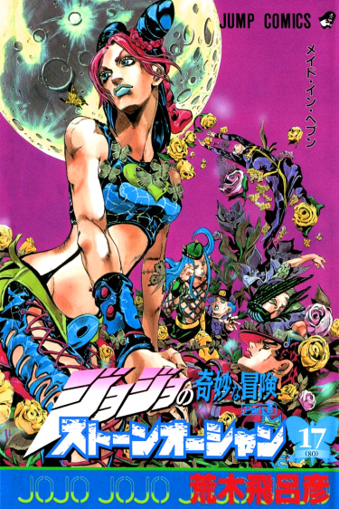

Тип: Манга
Тома: 17
Главы: 158
Статус: 1999-2003 г.г.
Жанры: Экшен Приключения Сёнен
По-японски: ジョジョの奇妙な冒険 ストーンオーシャン
По-английски: JoJo's Bizarre Adventure Part 6: Stone Ocean

Каменный океан/Stone Ocean
Информация
Описание
Шестая часть манги «Невероятные приключения ДжоДжо», выделенная в отдельную серию, и, наверное, самая сюжетно-сложная из всех. «Каменный океан» повествует о приключениях Джолин Куджо, дочери Джотаро Куджо, в тюрьме «Green Dolphin Street» и известную как «The Aquarium». Снова стенды, снова тайны и странные события, снова главный злодей со способностью воздействовать на время и снова следы Дио Брандо...
Персонажи
Аниме
Читать